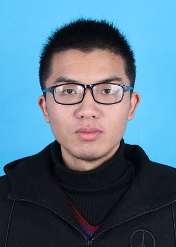

Jie Huang黄杰Ph.D Candidate
University of Science and Technology of China, Anhui, China |
 |

Biography
I am currently a Ph.D. student in department of automation, University of Science and Technology of China (USTC), I obtained my B. Eng. degree in department of electronic engineering, Northwestern Polytechnical University (NWPU) in 2018.
My research interests focus on computer vision, especially low-level vision tasks, advised by Feng Zhao and Zhiwei Xiong, and I also work closely with Xueyang Fu. I supervise the low-level vision group of BIVLab, I have formerly studied at the low-level vision group of VIDAR , and was also advised by Dong Liu. I will join Multimedia Lab(MMLab) at CUHK as a research post-doctor, advised by Hongsheng Li . I am willing to discuss academics with others on WeChat (欢迎添加微信交流讨论). -->
2023
-
Rethinking Pan-sharpening in Closed-loop Regularization (TNNLS)
Man Zhou, Jie Huang^, Danfeng Hong, Feng Zhao, Chongyi Li, Jocelyn Chanussot.
[pdf] [code]
-
Deep Adaptive Pansharpening via Uncertainty-aware Image Fusion (TGRS)
Kaiwen Zheng, Jie Huang^, Man Zhou, Danfeng Hong, Feng Zhao
[pdf] [code]
-
Region-Aware Portrait Retouching with Sparse Interactive Guidance (TMM)
Huiming Zeng, Jie Huang, Jiacheng Li, Zhiwei Xiong
[pdf] [code]
-
Learning Sample Relationship for Exposure Correction (CVPR)
Jie Huang^, man zhou^, Jie Xiao, kaiwen zheng, Naishan Zheng, Feng Zhao#, Zhiwei Xiong
[pdf] [code]
-
Visual Recognition-Driven Image Restoration for Multiple Degradation with Intrinsic Semantics Recovery (CVPR)
Zizheng Yang, Jie Huang^, Jiahao Chang, man zhou, Hu Yu, JingHao Zhang, Feng Zhao
[pdf] [code]
-
Ingredient-oriented Multi-Degradation Learning for Image Restoration (CVPR)
JingHao Zhang^, Jie Huang^, Mingde Yao, Zizheng Yang, Hu Yu, man zhou, Feng Zhao#
[pdf] [code]
-
Learning Semantic Degradation-Aware Guidance for Recognition-Driven Unsupervised Low-Light Image Enhancement (AAAI)
Naishan Zheng^, Jie Huang^, man zhou, Zizheng Yang, Qi Zhu, Feng Zhao#
[pdf] [code]
-
Modality-aware Feature Integration for Pan-sharpening (TGRS)
man zhou, Jie Huang^, Feng Zhao, Danfeng Hong#
[pdf] [code]
2022
-
Deep Fourier Up-Sampling (NeurIPS)
Man Zhou^, Hu Yu^, Jie Huang, Feng Zhao, Jinwei Gu, Chen Change Loy, Deyu Meng, and Chongyi Li#
[pdf] [code]
-
Panchromatic and Multispectral Image Fusion via Alternating Reverse Filtering Network (NeurIPS)
Keyu Yan^, Man Zhou^, Jie Huang, Chengjun Xie, Feng Zhao, Chongyi Li, and Danfeng Hong#
[pdf] [code]
-
Effective Pan-sharpening by Multi-Scale Invertible Neural Network and Heterogeneous Task Distilling (IEEE TGRS)
Man Zhou^, Jie Huang^, Xueyang Fu#, Feng Zhao, Danfeng Hong
[pdf]
-
CNSNet: A Cleanness-Navigated-Shadow Network for Shadow Removal (ECCV@AIM Workshop)
Qianhao Yu^, Naishan Zheng^, Jie Huang, Feng Zhao#
[pdf]
-
Unsupervised Underexposed Image Enhancement via Self-Illuminated and Perceptual Guidance (TMM)
Naishan Zheng^, Jie Huang^, Feng Zhao#, Xueyang Fu, Feng Wu
[pdf]
-
Deep Fourier-based Exposure Correction Network with Spatial-Frequency Interaction (ECCV) (Oral)
Jie Huang^, Yajing Liu^, Feng Zhao#, Keyu Yan, Jinghao Zhang, Yukun Huang, Man Zhou#, Zhiwei Xiong
[pdf] [code]
-
Spatial-Frequency Domain Information Integration for Pan-sharpening (ECCV)
Man Zhou^, Jie Huang^, Keyu Yan, Hu Yu, Xueyang Fu, Aiping Liu, Xian Wei, Feng Zhao#
[pdf] [code]
-
Frequency and Spatial Dual Guidance for Image Dehazing (ECCV)
Hu Yu, Naishan Zheng, Man Zhou, Jie Huang, Feng Zhao
[pdf] [code]
-
Exposure-Consistency Representation Learning for Exposure Correction (ACMMM)
Jie Huang^, Man Zhou^, Yajing Liu, Mingde Yao, Feng Zhao#, Zhiwei Xiong
[pdf] [code]
-
Enhancement by Your Aesthetic: An Intelligible Unsupervised Personalized Enhancer for Low-Light Images (ACMMM)
Naishan Zheng^, Jie Huang^, Qi Zhu, Man Zhou, Feng Zhao#, Zheng-jun Zha
[pdf] [code]
-
Normalization-based Feature Selection and Restitution for Pan-sharpening (ACMMM)
Man Zhou^, Jie Huang^, Keyu Yan, Gang Yang, Aiping Liu, Chongyi Li, Feng Zhao#
[pdf] [code]
-
SIR-Former: Stereo Image Restoration Using Transformer (ACMMM)
Zizheng Yang^, Mingde Yao^, Jie Huang, Man Zhou, Feng Zhao#
[pdf] [code]
-
Adaptively Learning Low-high Frequency Information Integration for Pan-sharpening (ACMMM)
Man Zhou^, Jie Huang^, Chongyi Li#, Hu Yu, Keyu Yu, Naishan Zheng, Feng Zhao
[pdf] [code]
-
Source-Free Domain Adaptation for Real-world Image Dehazing (ACMMM)
Hu Yu^, Jie Huang^, Yajing Liu, Qi Zhu, Man Zhou, Feng Zhao
[pdf] [code]
-
Structure- and Texture-Aware Learning for Low-Light Image Enhancement (ACMMM)
Jinghao Zhang^, Jie Huang^, Mingde Yao, Man Zhou, Feng Zhao
[pdf] [code]
-
Bijective Mapping Network for Shadow Removal (CVPR) (Oral)
Yurui Zhu^, Jie Huang^, Xueyang Fu#, Feng Zhao, Qibin Sun, and Zheng-Jun Zha
[pdf] [code]
-
Exposure Normalization and Compensation for Multiple Exposure Correction (CVPR)
Jie Huang^, Yajing Liu^, Xueyang Fu, Man Zhou, Yang Wang, Feng Zhao#, Zhiwei Xiong
[pdf] [code]
-
Mutual Information-driven Pan-sharpening (CVPR)
Man Zhou^, Keyu Yan^, Jie Huang, Zihe Yang, Xueyang Fu#, Feng Zhao
[pdf]
-
DAST-Net: Depth-aware spatio-temporal network for video deblurring (ICME) (Oral)
Qi Zhu, Zeyu Xiao, Jie Huang, Feng Zhao#
[pdf]
-
Low-Light Stereo Image Enhancement (TMM)
Jie Huang, Xueyang Fu, Zeyu Xiao, Feng Zhao, Zhiwei Xiong#
[pdf] [code]
-
Pan-sharpening with Customized Transformer and Invertible Neural Network (AAAI)
Man Zhou^, Jie Huang^, Yanchi Fang, Xueyang Fu, Aiping Liu
[pdf] [code]
2021
-
Effective Pan-Sharpening With Transformer and Invertible Neural Network (IEEE TGRS)
Man Zhou, Xueyang Fu#, Jie Huang, Feng Zhao, Aiping Liu, Rujing Wang
[pdf]
-
EDPN: Enhanced deep pyramid network for blurry image restoration (CVPR Workshop)
Ruikang Xu^, Zeyu Xiao^, Jie Huang, Yueyi Zhang#, Zhiwei Xiong
[pdf] [code]
-
Space-Time Distillation for Video Super-Resolution (CVPR)
Zeyu Xiao, Xueyang Fu, Jie Huang, Zhen Cheng, and Zhiwei Xiong#
[pdf]
2019
-
Hybrid Image Enhancement With Progressive Laplacian Enhancing Unit (ACMMM)
Jie Huang, Zhiwei Xiong#, Xueyang Fu, Dong Liu, Zheng-Jun Zha
[pdf]
2018
-
Range scaling global u-net for perceptual image enhancement on mobile devices (ECCV Workshop)
Jie Huang^, Pengfei Zhu^, Mingrui Geng^, Jiewen Ran^, Xingguang Zhou, Chen Xing, Pengfei Wan, Xiangyang Ji
[pdf] [code]
Competitions & Awards
- National Scholarship (国家奖学金) of Ph.D. Student in 2022
- 2nd place in 首届全国人工智能大赛 AI-4K HDR赛道 (500000 RMB Prize)
- 3rd place in CVPR2021@UG2 Challenge on Low-light Face Detection Track
- Winner Award in CVPR2021@NTIRE Challenge on Image Deblurring Track
- 2nd place in CVPR2020@NTIRE Challenge on Image Deblurring Track 2
- 1st place in ICCV2019@AIM Challenge on Bokeh effect Track 1
- 1st place in ECCV2018@PIRM Challenge on Image Enhancement Track 2
- Outstanding Graduate (优秀毕业生) of NWPU in 2018 (Rank 1/32)
- National Scholarship (国家奖学金) of B.E. Student in 2017
Service
- Area chair of ACMMM 2023
- Conference reviewer: CVPR/ICCV/ECCV/NeurlPS/AAAI/
- Journal reviewer: TMM/TCSVT